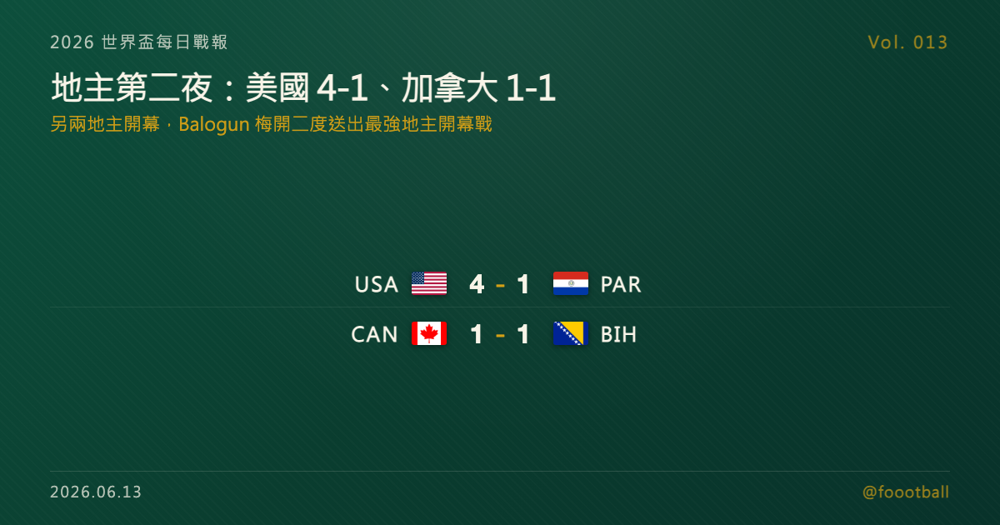

地主第二夜：美國 4-1 巴拉圭、Balogun 梅開二度＋Reyna 補時封關，加拿大主場被波赫逼平
2026 世界盃台北時間 6/13 迎來另兩個地主開幕：美國在洛杉磯 SoFi Stadium 4-1 大勝巴拉圭，Balogun 梅開二度、Reyna 補時封關，送出三地主目前最強的開幕戰；加拿大則在多倫多主場被波士尼亞與赫塞哥維納（下稱波赫）1-1 逼平。D 組由美國以 3 分領跑，B 組加拿大與波赫各 1 分並列。

2026 世界盃每日戰報 Vol. 013
§1 即時比分戰報
開幕第二夜輪到另外兩個地主登場，氣氛一熱一冷。美國在洛杉磯 SoFi Stadium 4-1 大勝巴拉圭，Folarin Balogun 梅開二度、Giovanni Reyna 補時封關，替三地主送出目前最具說服力的開幕戰；同日加拿大在多倫多 BMO Field 主場開幕，卻被波士尼亞與赫塞哥維納（下稱波赫）1-1 逼平，靠替補 Cyle Larin 第 78 分鐘扳平才搶回一分。三地主到此全部登場，以下是當日兩戰：
| 賽事 | 比分 | 場館 | 焦點 |
|---|---|---|---|
| 🇺🇸 美國 — 🇵🇾 巴拉圭 | 4 - 1 | 洛杉磯 SoFi Stadium（賽事期間亦稱 Los Angeles Stadium） | Bobadilla 7' 烏龍（巴）；Balogun 31'、45+5' 梅開二度；Mauricio 73'（巴）；Reyna 補時封關 |
| 🇨🇦 加拿大 — 🇧🇦 波赫 | 1 - 1 | 多倫多 BMO Field（賽事期間亦稱 Toronto Stadium） | Jovo Lukić 21'（波赫）先進球；替補 Larin 78' 扳平 |
兩場分屬 D 組與 B 組，各打完首輪第一戰。積分榜也開出當日這兩組的第一個版本——§2 是現在的形勢。
§2 排行榜區：D 組／B 組首戰後形勢
美國這場 4-1 大勝，淨勝球一口氣 +3，暫居 D 組龍頭；同組的澳洲與土耳其尚未出戰，巴拉圭則先以一場失利起步。D 組一戰過後：
| # | 球隊 | 賽 | 勝 | 和 | 負 | 進 | 失 | 差 | 分 |
|---|---|---|---|---|---|---|---|---|---|
| 1 | 🇺🇸 美國 | 1 | 1 | 0 | 0 | 4 | 1 | +3 | 3 |
| 2 | 🇦🇺 澳洲 | 0 | 0 | 0 | 0 | 0 | 0 | 0 | 0 |
| 2 | 🇹🇷 土耳其 | 0 | 0 | 0 | 0 | 0 | 0 | 0 | 0 |
| 4 | 🇵🇾 巴拉圭 | 1 | 0 | 0 | 1 | 1 | 4 | −3 | 0 |
B 組則是兩隊各拿一分、平分秋色。加拿大與波赫都還沒分出高下，另一場瑞士對卡達尚未登場，這組的形勢要等首輪打完才會更明朗：
| # | 球隊 | 賽 | 勝 | 和 | 負 | 進 | 失 | 差 | 分 |
|---|---|---|---|---|---|---|---|---|---|
| 1 | 🇨🇦 加拿大 | 1 | 0 | 1 | 0 | 1 | 1 | 0 | 1 |
| 1 | 🇧🇦 波赫 | 1 | 0 | 1 | 0 | 1 | 1 | 0 | 1 |
| 3 | 🇶🇦 卡達 | 0 | 0 | 0 | 0 | 0 | 0 | 0 | 0 |
| 3 | 🇨🇭 瑞士 | 0 | 0 | 0 | 0 | 0 | 0 | 0 | 0 |
別忘了本屆晉級規則：12 個小組、每組前兩名加上 8 個最佳第三名，共 32 隊晉級淘汰賽。小組第三不再注定回家，所以即使是先吞一敗的巴拉圭、主場只拿一分的加拿大，都還沒被推到牆角——每一分都可能在三週後變成晉級關鍵。
§3 賽事摘要
- 美國 4-1 巴拉圭：地主在 SoFi Stadium 開出夢幻的一場。第 7 分鐘巴拉圭的 Bobadilla 不慎自擺烏龍，美國早早領先；Folarin Balogun 隨後在第 31 分鐘與上半場補時（45+5'）梅開二度，半場前就把分差拉開到 3-0。下半場巴拉圭由 Mauricio 第 73 分鐘扳回一城、展現韌性，但 Giovanni Reyna 補時再進一球封關，定格 4-1。若以比分差與上半場早早拉開的比賽走勢來看，這場 4-1 比墨西哥的開幕勝、加拿大的平局更像一次地主宣示——兩名功臣 Balogun 與 Reyna 各自的來時路，見今日特刊。
- 加拿大 1-1 波赫：相較美國的高歌猛進，另一個地主的開幕夜冷靜得多。加拿大在多倫多 BMO Field 主場登場，卻被波赫的 Jovo Lukić 在第 21 分鐘先聲奪人，落後一直延續到下半場；替補登場的 Cyle Larin 第 78 分鐘扳平，才替地主搶回寶貴的一分。首度在本土辦世界盃、主場開幕只拿一分，對加拿大談不上理想，但波赫這支經由歐洲附加賽闖進來的隊伍也證明了自己的硬度。在 48 隊、每組前兩名加 8 個最佳第三名的新賽制下，這一分仍把兩隊的出線門都留著。
§4 焦點觀察｜特刊預告：地主的宣示——美國 4-1 巴拉圭
今天觸發了一篇特刊。美國這場 4-1，不只是比分上的大勝，更像是地主對滿場觀眾、也對其他 47 支球隊的一次宣示。
兩個主角值得單獨說。一是 Folarin Balogun 的梅開二度——這名出生於紐約、卻在英格蘭長大成名，最終在 2023 年選擇改披美國隊的前鋒，用一場地主世界盃的雙響，回答了「美國鋒線到底靠不靠得住」的長年問號。二是 Giovanni Reyna 補時的封關球——對這名出身足球世家、近年被傷病與低潮反覆糾纏的中場來說，在自家世界盃補時破門，是一種遲來的兌現。三地主開幕，墨西哥贏在紀錄與情緒、加拿大被逼平，唯獨美國用一場 4-1 把「地主企圖心」寫得最直白。
📖 完整特刊《地主的宣示：美國 4-1 巴拉圭，Balogun 與 Reyna 的開幕夜》今日稍晚發佈，會把這場勝利的戰術、兩名主角的來時路、以及它對 D 組與美國本屆走勢的意義講透。
§5 台北時間明晨看點
三地主全部登場後，開幕戲碼進入下一階段：更多新組別接力首戰、各組積分榜陸續成形，第一批足球傳統強權也即將進場。其中最受矚目的，是巴西對上 2022 世界盃四強摩洛哥——衛冕熱門與上屆黑馬的正面交鋒，會是接下來最值得鎖定的一戰。B 組、D 組的下一輪與更多新組別的首戰，Vol. 014 接著報。
資料來源：FIFA 賽程與場館資訊、AP、Reuters、The Guardian 賽後報導交叉核對（2026 世界盃 6/12 美加墨當地賽果、進球分鐘、分組與球員資料）。賽程與時間以官方公告為準。
常見問題
2026 世界盃 6/13（台北時間）兩個地主開幕戰結果是什麼？
美國在洛杉磯 SoFi Stadium 4-1 大勝巴拉圭，Balogun 第 31、45+5 分鐘梅開二度、Reyna 補時封關；加拿大在多倫多 BMO Field 被波赫（波士尼亞與赫塞哥維納）1-1 逼平，替補 Larin 第 78 分鐘扳平。
D 組與 B 組目前積分榜如何？
D 組：美國 1 戰全勝、淨勝球 +3 暫居第一，澳洲與土耳其尚未出戰，巴拉圭 0 分。B 組：加拿大與波赫各 1 分並列，卡達與瑞士尚未登場。本屆每組前兩名加 8 個最佳第三名共 32 隊晉級。
接下來最值得看的是哪一場？
巴西對上 2022 世界盃四強摩洛哥，是接下來最受矚目的一戰；更多新組別也將陸續首戰登場。賽程時間以台北時間換算、實際以官方公告為準。
Tags：世界盃, 2026 世界盃, 美國隊, Balogun, 加拿大, 開幕戰